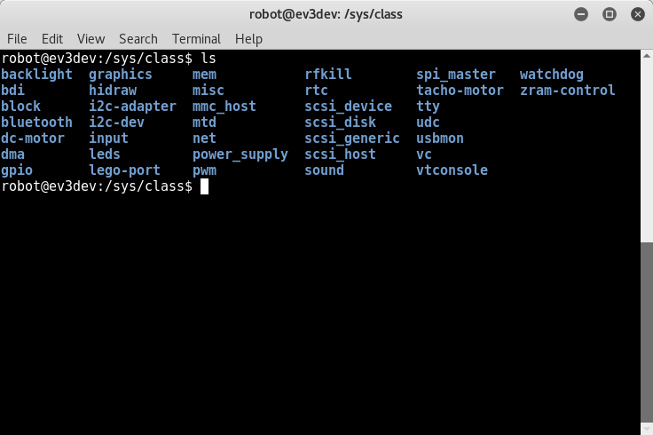
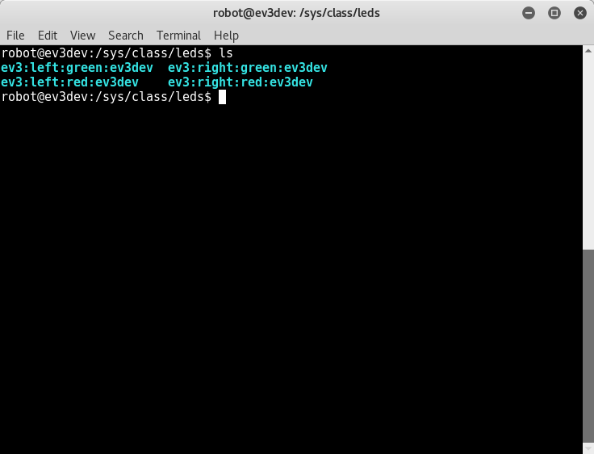
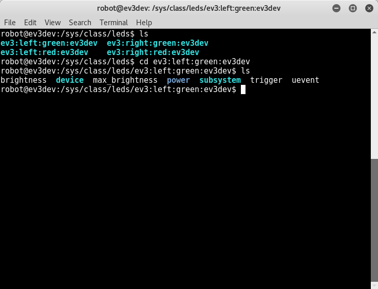
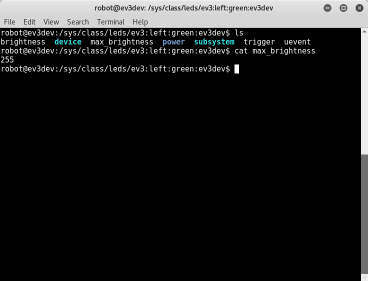
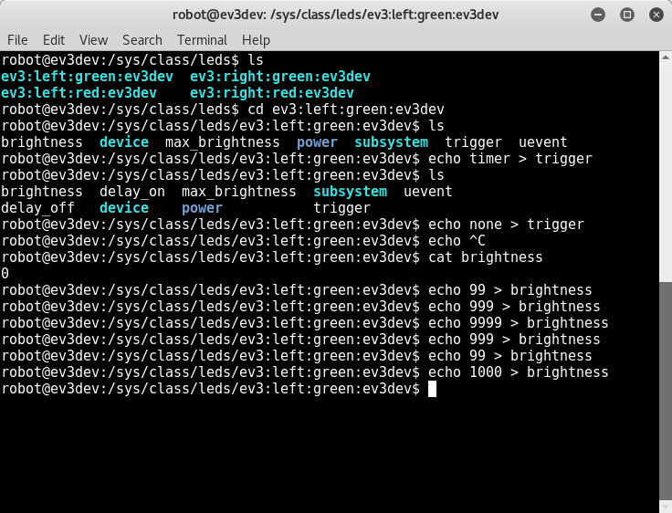

“
sysfs
is a pseudo file system provided by the Linux kernel that exports information about various
kernel subsystems
,
hardware devices
, and associated
device drivers
from the kernel’s device model to user space through virtual files. In addition to providing information about various devices and kernel subsystems, exported virtual files are also used for their configuring.”
(Wikipedia contributors. Sysfs)
Let find out what hardware devices available in ev3dev.
cd /sys/class
ls

you might have a guest already of what the purpose of these devices by looking throught their name, such as
leds
,
power_supply
,
dc-motor
,
tacho-motor
,
sound
.
| devices | function |
|---|---|
leds
|
the EV3 brick LEDs |
power_supply
|
the power supply for EV3, is can be battery “ |
dc-motor
|
|
tacho-motor
|
the EV3 motor |
sound
|
the EV3 brick sound module |
leds
to use to control the leds on EV3 brick status LEDs. There are 4 LEDs, 2 green leds and 2 red leds.
cd leds
ls

these
leds
named come with the
left
or
right
position with
green
or
red
color.
As know some process trigger these leds state, such as showing green for power on, showing red for shutdown.
let go side, to see what attitude do these leds have.
cd ev3:left:green:ev3dev
ls

brightness
,
max_brightness
,
trigger
,
uevent
and the remaining is
subsystem
.
find out the
max_brightness
value for led
brightness
value
cat max_brightness

Q: why 255?
A: 255 is single-byte unsigned integer maximum value, 11111111 = 255.
try around
let remove default trigger and use timer for trigger for instead.
blink led manual using brightness
echo none > trigger # no trigger
echo 0 > brightness # dim led
sleep 1 # wait for 1 second
echo 255 > brightness # maximum brightness
the blink led using timer
echo timer > trigger # using timer as trigger
cat delay_off # output 1000 = 1s
cat delay_on # output 1000 = 1s
# blink faster
# to edit the delay value
echo 100 > delay_off # set 0.1s off
echo 100 > delay_on # set 0.1s on

Creating you shell script from following command
cd ~/
nano blinkLEDS.sh # vi blinkLEDS.sh if you wanna use vi for instead
Type the following content in the school script
:
need to type as
\:
use backslash to escape
:
.
code/sysfs/led.sh
#!/bin/sh
LED1=/sys/class/leds/ev3\:left\:green\:ev3dev\brightness
while true;
do
echo "255" > $LED1
sleep 1
echo "0" > $LED1
done
Execute your shell sciprt from following command
sh blinkLEDS.sh
Or, execute the shell script in background from following command, a process ID(PID) should return
sh blinkLEDS.sh &
To end the background shell script of running
kill 440 # assume the return PID is 440
If don’t know PID, use
ps
to find out the current PID of the shell script is running. Also, use grep the filter the output content of which link contain
blinkLEDS.sh
ps aux | grep blinkLEDS.sh
Go kill!!.
Execute your shell sciprt by defined execute wrapper which is
#!/bin/sh
chmod +x blinkLEDS.sh # we need to add execute presmission to the blinkLEDS.sh
Execute the shell script thougth defined execute wrapper.
./blinkLEDS.sh
Assigment : Blink LEDs in order by Shell Script
LED4 = ev3:right:red:ev3dev
LED4 -> LED3 -> LED2 -> LED1 ->
each blink with 1 second dealy, blink is 0.5s on then 0.5s off.
Assigment : Blink LEDs in order by C Programming Language
LED4 = ev3:right:red:ev3dev
LED4 -> LED3 -> LED2 -> LED1 ->
each blink with 1 second dealy, blink is 0.5s on then 0.5s off.
C language program example(
code/led.c
) :
#include <stdio.h>
#include <stddef.h>
#include <time.h>
#define on "255"
#define off "0"
#define led1 "/sys/class/leds/ev3\:left\:green\:ev3dev\brightness"
void delay(init millseconds) {
long pause;
clock_t now, then;
pause = milliseconds*(CLOCKS_PER_SEC/1000);
now = then = clock();
while（ （now-then) < pause)
now = clock();
}
}
int main (void) {
// define file handles for led1
FILE *ifp_led1;
// led1 on
// make ifp_led1 as writable
ifp_led1 = fopen(led1, "w");
// fail to oepn
if(ifp_led1 == NULL) {printf("Unable to open.\n");}
// led1 on
fseek(ifp_led1, on, SEEK_SET);
// print the state
fprintf(ifp_led1, "%s", on);
// flush
fflush(ifp_led1);
// close files
fclose(ifp_led1);
// waiting for 1 second
delay(1000);
// led1 off
// make ifp_led1 as writable
ifp_led1 = fopen(led1, "w");
// fail to oepn
if(ifp_led1 == NULL) {printf("Unable to open.\n");}
// led1 off
fseek(ifp_led1, off, SEEK_SET);
// print the state
fprintf(ifp_led1, "%s", on);
// flush
fflush(ifp_led1);
// close files
fclose(ifp_led1);
return 0;
}
compile the c code and run
gcc led.c -o led
chmod +x led
./led
Wikipedia contributors. Sysfs [Internet]. Wikipedia, The Free Encyclopedia; 2017 Mar 21, 13:09 UTC [cited 2017 May 2]. Available from: https://en.wikipedia.org/w/index.php?title=Sysfs&oldid=771424022 .
LEGO MINDSTORMS EV3 — ev3dev-jessie Linux kernel drivers 19 documentation, LEDS
http://docs.ev3dev.org/projects/lego-linux-drivers/en/ev3dev-jessie/ev3.html#leds
ntcu 105-1 embedded-system/ Lab03-Toggle user LED on the Beaglebone.pdf
Tutorial: How to use libudev and Sysfs in Linux
http://www.signal11.us/oss/udev/
https://www.kernel.org/doc/Documentation/leds/ledtrig-transient.txt